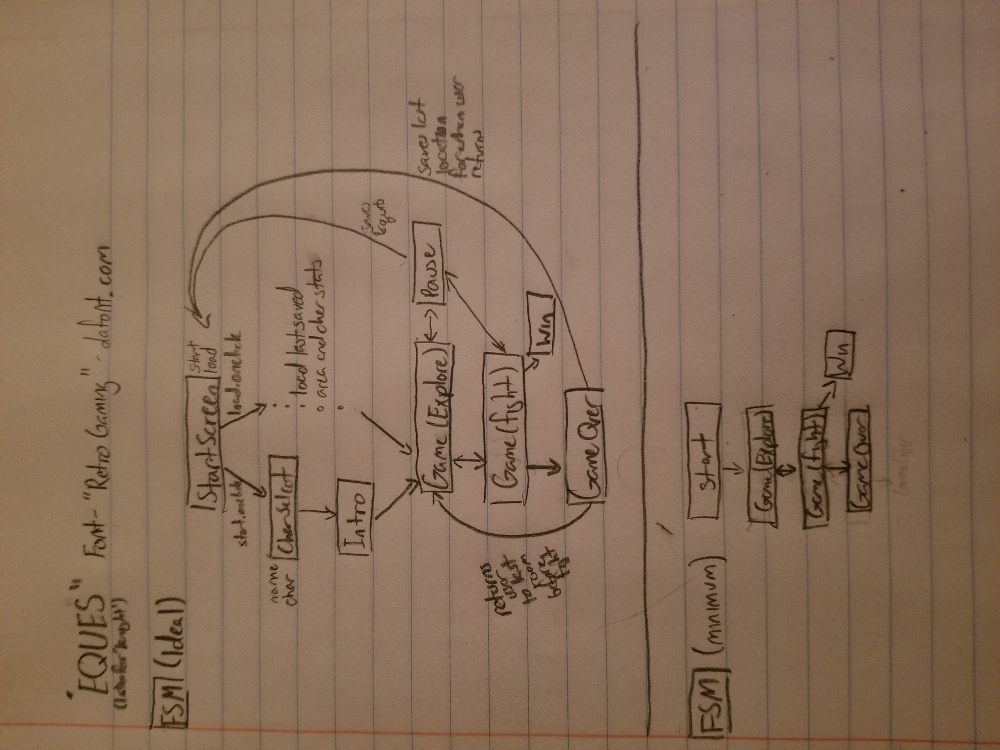
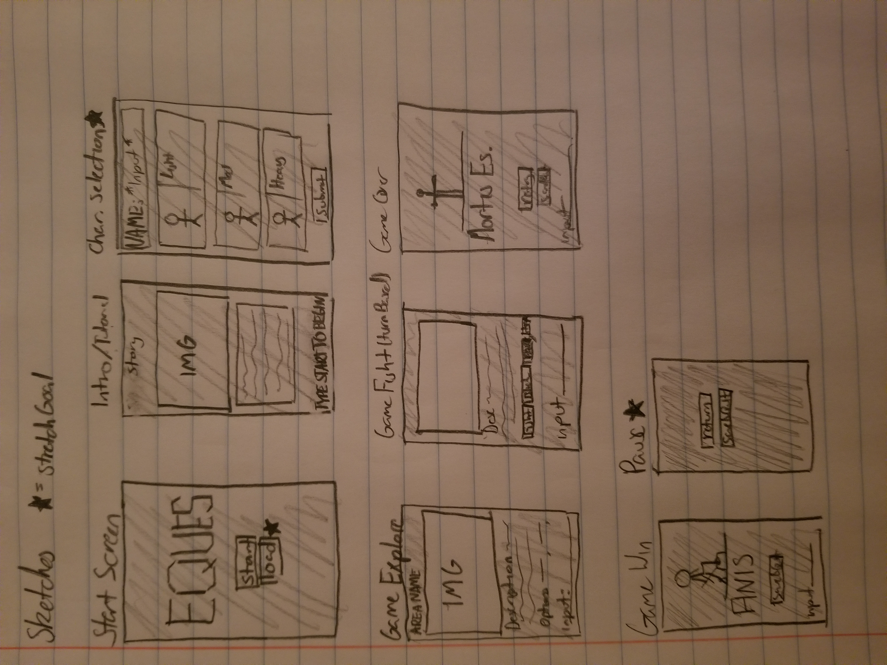

High Concept
Text-Based Adventure meets Turn-Based Strategy in a Knight's quest for glory!
Genre
Adventure, Strategy, RPG, Exploration
Platform
Desktop Only
Story
The player assumes the role of "Titus", a knight journeying through the countryside in search of riches and glory
Aesthetics
The game has a retro look to it, with all fonts and pictures being in a pixel art style
Gameplay
- The game is text based, so the user will use type in all of their commands.
- The player will go between exploring and fighting
- While in explore mode, the player will be presented with a picture and description of their surroundings as well as a list of options
- while the options seem limited, there are some secret items that can be obtained
- While in fight mode, the player will engage in turn-based combat
- The player has a few options in fight mode: Attack, Defend, Parry, and Use Item
- Attack: the player deals damage to opponent (scaled by enemy type and weapon)
- Defend: the player braces and takes less damage on opponent's next turn
- Parry: the player attempts to block and follow up with a devastating attack, however if the enemy chooses not to attack, player is twice as vunerable on next turn (enemies can also parry)
- Use Item: if user has any special items, allow for use in combat
Screenshots
 Other
- At a minimum, this game will allow a user to do the exploring and fighting, very basic version
- Some stretch goals: Save/Load, Pause, Multiple Character Presets, Multiple Usable Weapons
Documentation
Process
At first, I had this grandiose idea for what I wanted my game to be. I wanted to give a text based adventure game some visuals. However, I ended up changing that idea to be a pure text based adventure, but with the added twist in the combat (which I will discuss momentarily). The first thing I needed, before any sort of fighting or extra features were implemented, was a exploration system. So using ES6 class objects as vertices, I built a graph as my map, upon which the game is built.
Once that was done, I decided to implement a combat system which offers a twist on turn-based combat. That twist is the "Parry". A lot of turn based games are simply just taking turns attacking (albeit sometimes with a variety of moves) which sort of takes away some of the challenge of the fight. My fight system builds on this with a sort of "will they attack or not?" mentality. If they do attack, like usual, you take damage. If they block, it is essentially them choosing not to act. If they parry, then depending on your action, you will either suffer a hefty amount of health (attacking) or get a free hit on the next turn (defend). And having done many trial fights in the process of debugging, I would definitely say it is challenging
After the fight system was complete, I added little extras, like potions, scripted fights (automatic as oppposed to manually activated), and changing area descriptions that change after visiting the area or fighting a monster. I also added music which I found at fesliyanstudios.com
Sources:
- PIXI.JS API, Documentation, and tutorials
- Prof. Dower Chin's Youtube PIXI.JS series
- Music from fesliyanstudios.com
- Background graphic found on Pintrest (labeled as free to use)
- Inspiration from Zork(1980), Stories Untold(2017)
- JavaScript/JSON Documentation
Special Features
I what I am most proud of is the combat system, though at some point I considered making the combat more predictable, it became a stretch goal and I soon forgot about it. However, I think the idea that the enemy's action is random adds to the challenge of the combat. I am also quite pleased with the writing for each area, though it doesnt attempt to write some deep grandiose story, I feel that it is grounded enough to be believable. And some of the alternate descriptions add a layer of mystery to it all I think.
Requirements
I think I did a pretty good job following the Requirements. The user interface looks rather well organized with the game giving a clear instructions with how to play. HTML and CSS are valid and JavaScript shows no errors as of my last trial run before final upload. Code Conventions are followed pretty well. The only thing, is I added classes to my js files where I thought they fit best, as opposed to all in one file. They are easier to keep track of that way and are easier to see where they fit in. I also met the Milestone deadline given.